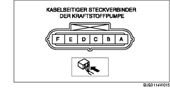

KRAFTSTOFFPUMPE PRÜFEN [ZJ, Z6, LF]
B3E011413350W03
Funktionsprüfung der Kraftstoffpumpe
1. WDS o.Ä. an den Diagnosestecker 2 anschließen.
2. Den Tankdeckel abnehmen.
3. Den Zündschalter auf ON drehen.
4. Mit Hilfe der Simulationsfunktion 'FP' prüfen, ob ein Betriebsgeräusch der Kraftstoffpumpe hörbar ist, wenn diese von OFF auf ON geschaltet wird.
-
• Falls dieses Geräusch nicht hörbar ist, die Spannung an Klemme A der Kraftstoffpumpe (kabelbaumseitig) messen.

-
- Andernfalls auf folgende Defekte prüfen:
-
• Durchgang der Kraftstoffpumpe
-
- Falls die Vorgaben nicht erfüllt werden, folgende Punkte prüfen:
-
• Kraftstoffpumpenrelais
-
• Kabelbaum und Steckverbinder zwischen Hauptrelais - Kraftstoffpumpenrelais - Kraftstoffpumpe
-
Standard
-
B+ (Zündschalter auf ON)
Prüfung auf Durchgang
1. Das Massekabel der Batterie abklemmen.
2. Den Steckverbinder der Kraftstoffpumpe abziehen.
3. Auf Durchgang zwischen Kraftstoffpumpe und Klemme A-E prüfen.
-
• Falls Durchgang vorhanden ist, "Prüfung auf Schaltkreisunterbrechung/Kurzschluss" durchführen.
-
• Wenn kein Durchgang besteht, die Kraftstoffpumpe austauschen.
Prüfung auf Schaltkreisunterbrechung/Kurzschluss
1. Die folgenden Kabelbäume auf Unterbrechung und Kurzschluss (Durchgangsprüfung) prüfen.
Unterbrechung
-
• Falls kein Durchgang besteht, ist der Schaltkreis unterbrochen. Den entsprechenden Kabelstrang reparieren oder austauschen.
-
- Klemme A der Kraftstoffpumpe und Klemme D des Kraftstoffpumpenrelais
-
- Klemme E der Kraftstoffpumpe und Karosseriemasse
Kurzschluss
-
• Falls Durchgang besteht, ist der Schaltkreis kurzgeschlossen. Den entsprechenden Kabelstrang reparieren oder austauschen.
-
- Klemme A der Kraftstoffpumpe und Karosseriemasse
-
- Klemme E der Kraftstoffpumpe und Stromversorgung
Statischen Kraftstoffdruck prüfen
-
Hinweis
-
• Eine Prüfung des statischen Kraftstoffdrucks kann nicht durchgeführt werden, da der Druckregler in der Krapftstoffpumpe integriert ist.